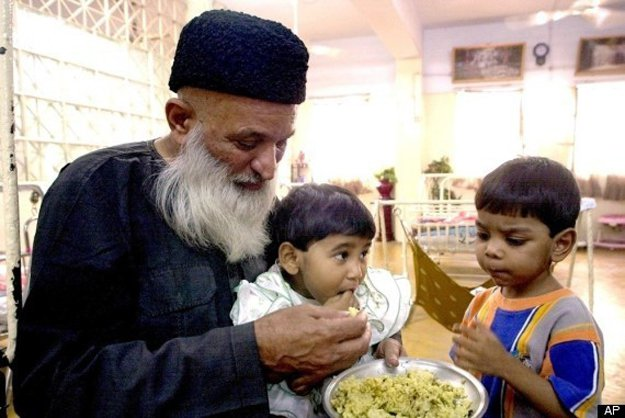

Abdul Sattar Edhi feeding little girl and boy in Orphanage home.
Abdul Sattar Edhi was a Pakistani philanthropist, ascetic, and humanitarian.
1928 - Born in Bantva, Gujarat India
1947 - After partition, Edhi moved to Pakistan and lived in the city name Karachi
1951 - He founded the Edhi foundation in Karachi to provide free 24 hour free emergency medical assistace to help poor and needy people
- At the start of his work, Edhi "begged for donations" to run Edhi foundation.
1965 - He started an Ambulance service. Now Edhi Foundation have more than 1800 ambulance stationed across Pakistan,28 rescue boats and 2 airplaine.
Raising more donations and enlisting medical students as volunteers, this humanitrian reach expanded across the country.
1997 - The foundation entered the Guinness World Records as the "largest volunteers ambulance organisation.
2005 -The reach of Edhi's foundation grew internationally, and the organisation raised $100,000.00 in aid relief for the victims of Hurricane Katrina
- Today the Edhi Foundation runs charitable hospitals, orphanages, homeless shelters, women's shelters, and rehab centers for drug addicts and mentally ill individuals
- His foundation also helps in the burils of unidentifed bodies
- Outside Edhi emergency centres there are cradles for "unwanted babies"
- If you dial 115 in south Asia nation, The Edhi Foundation will answer.
- He was nominated serval times for the Nobel Peace Prize.
1986 - Abdul Sattar Edhi received "the Romon Magsaysay Award for Public Servies" in 1986
1988 - Lenin Peace Prize
1992 - The Pakistan Civic Award from the Pakistan Civic Society
1993 - Paul Harris fellow from Rotary internation
- Edhi spend ay very simple life.
2016 - He died in Karachi of renal failure.
2017 - Google hailed Edhi's "super-efficient"ambulance service. Google has created more than 2000 doodles to celebrate Edhi services.
He is often referred to as Pakistan's version of Mother Teresa, and the BBC wrote that he was considered Pakistan's most respected figure and was seen by some as almost a saint.
My religion is humanitarianism, which is the basis of every religion in the world Abdul Sattar Adehi
If you want to know more about this incridable human being read on his
wikipedia Entry